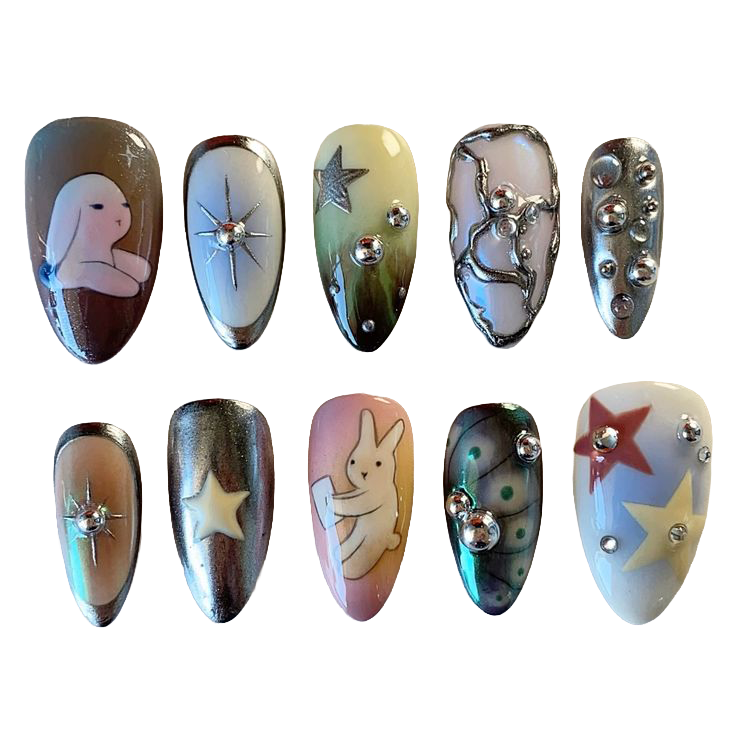
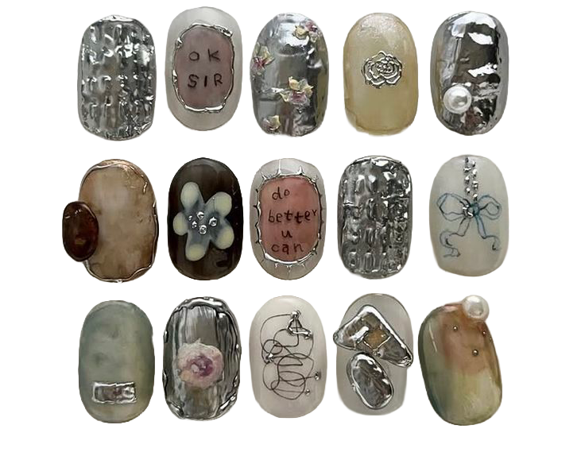
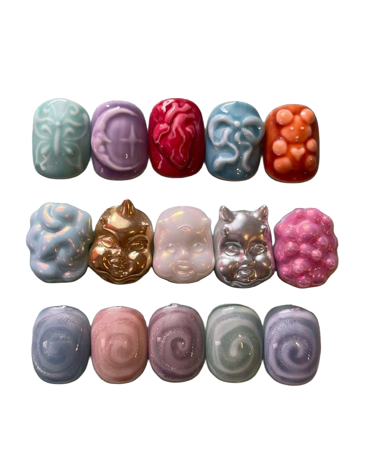
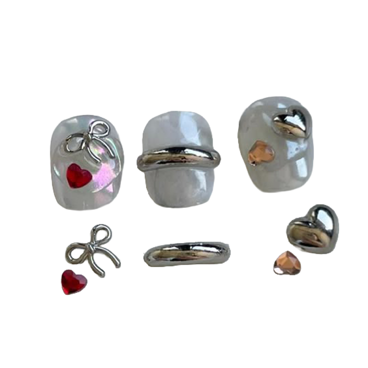
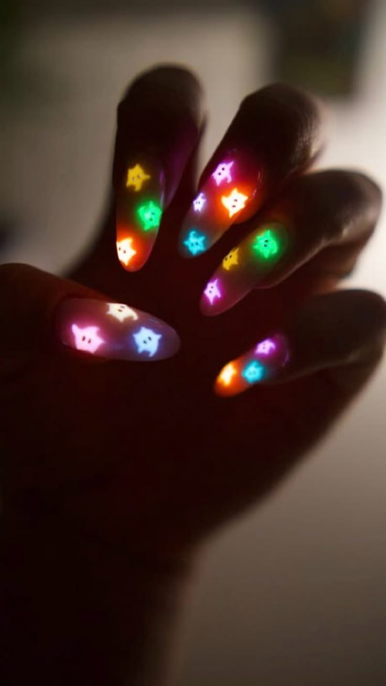

To me, nails are more than just polish. They are a way to express yourself, try new things, and add a little sparkle to your day.
So... welcome to my nail world!

These nails are a chrome and metallic theme with a mix of soft colors and 3D decorations. The designs use gel polish as the base, with metallic/chrome powder to create the shiny silver and reflective effects. Different nails have cute designs, including stars, a bunny, a small character, and abstract patterns.
The nails are decorated with silver rhinestones, metallic studs, and 3D charms, giving them a textured look. Some designs also appear to use silver nail art gel or chrome gel to create the raised outlines and abstract details.


This is more 3D nail art.
The last row shows swirls with gel polish and cat eye gel.


Very fun glow in the dark gel